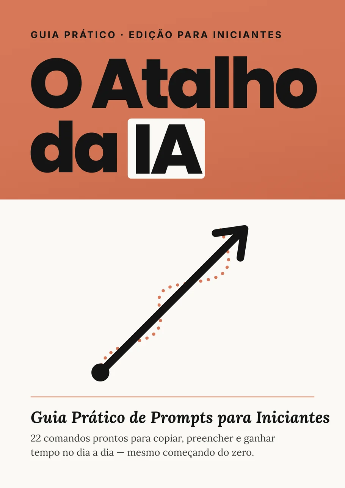

01
Produtividade e organização
Resumir e-mails, planejar o dia em blocos, resumir documentos longos e decidir entre duas opções.
5 promptsGuia prático de prompts para iniciantes
22 prompts prontos para copiar, preencher e ganhar tempo no dia a dia, mesmo começando do zero.
R$ 19,90pagamento único · e-book em PDF, 35 páginas
Funciona com ChatGPT, Claude e Gemini, inclusive nas versões gratuitas.

O problema
O problema quase nunca é a ferramenta. É o jeito de pedir. Uma ordem de três palavras faz a IA adivinhar o resto, e ela adivinha a resposta mais comum. O Atalho da IA ensina a pedir do jeito certo, sem jargão e sem precisar entender de tecnologia.
O método
As 5 peças de um bom prompt, sempre na mesma ordem. Todos os 22 prompts do guia são montados com ela.
Define o ponto de vista e o vocabulário.
O que a máquina não tem como adivinhar.
Um verbo de ação direto.
Limites contra respostas longas e clichês.
Tabela, lista, mensagem de WhatsApp.
No livro, um exemplo de antes e depois mostra a fórmula transformando um pedido vago numa mensagem pronta para enviar.
A biblioteca
Você só troca o que está entre [colchetes] pela sua situação. Cada prompt traz frases para continuar a conversa quando a primeira resposta não fica boa.
01
Resumir e-mails, planejar o dia em blocos, resumir documentos longos e decidir entre duas opções.
5 prompts02
Revisar o tom, montar propostas, preparar conversas difíceis, pautas e atas.
4 prompts03
Ideias de posts, roteiros de Reels, carrosséis, legendas e títulos.
5 prompts04
Responder ao "achei caro", prospectar, reativar clientes sumidos e resolver reclamações.
4 prompts05
Entender assuntos difíceis, treinar para entrevista, montar plano de estudos e traduzir com naturalidade.
4 promptsE mais
Para quem é
Quem quer usar a IA no trabalho e na rotina sem gastar horas aprendendo.
As versões gratuitas do ChatGPT, do Claude e do Gemini bastam para aplicar o guia.
Não precisa entender de tecnologia. Precisa saber pedir, e o guia ensina.
Dúvidas
Depois da confirmação do pagamento, você recebe o e-book em PDF pela Cakto, a plataforma onde a compra é feita.
Não. Os prompts funcionam nas versões gratuitas do ChatGPT, do Claude e do Gemini.
Os prompts cobrem cinco áreas: produtividade, redação profissional, conteúdo e redes sociais, vendas e atendimento, e estudos. Em todos, você troca os [colchetes] pela sua situação.
O guia traz o link. Ao abrir, o Google pede para fazer uma cópia, que fica na sua conta e é só sua. Precisa de uma conta Google.
Não. As respostas podem variar entre ferramentas e podem conter erros. O guia ensina a conferir números, datas e fatos importantes antes de usar uma resposta.
Em uma semana, você terá os seus próprios modelos salvos.
R$ 19,90pagamento único